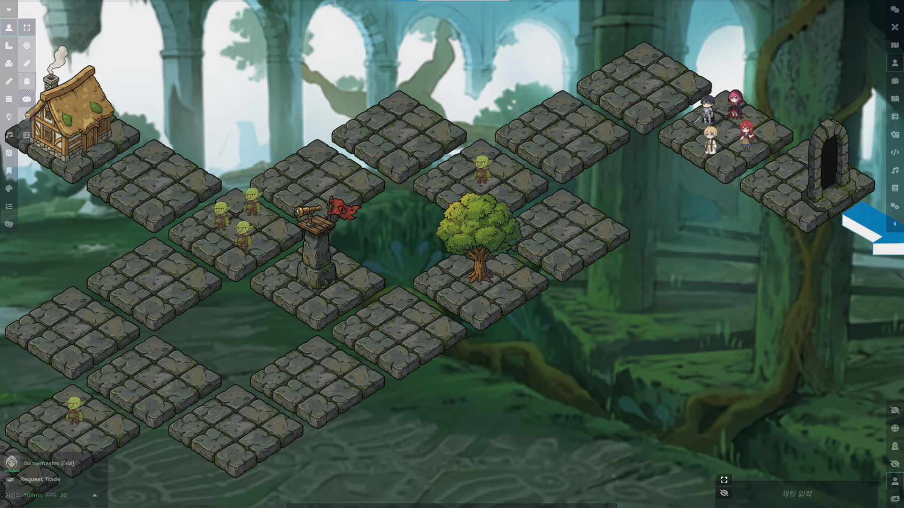
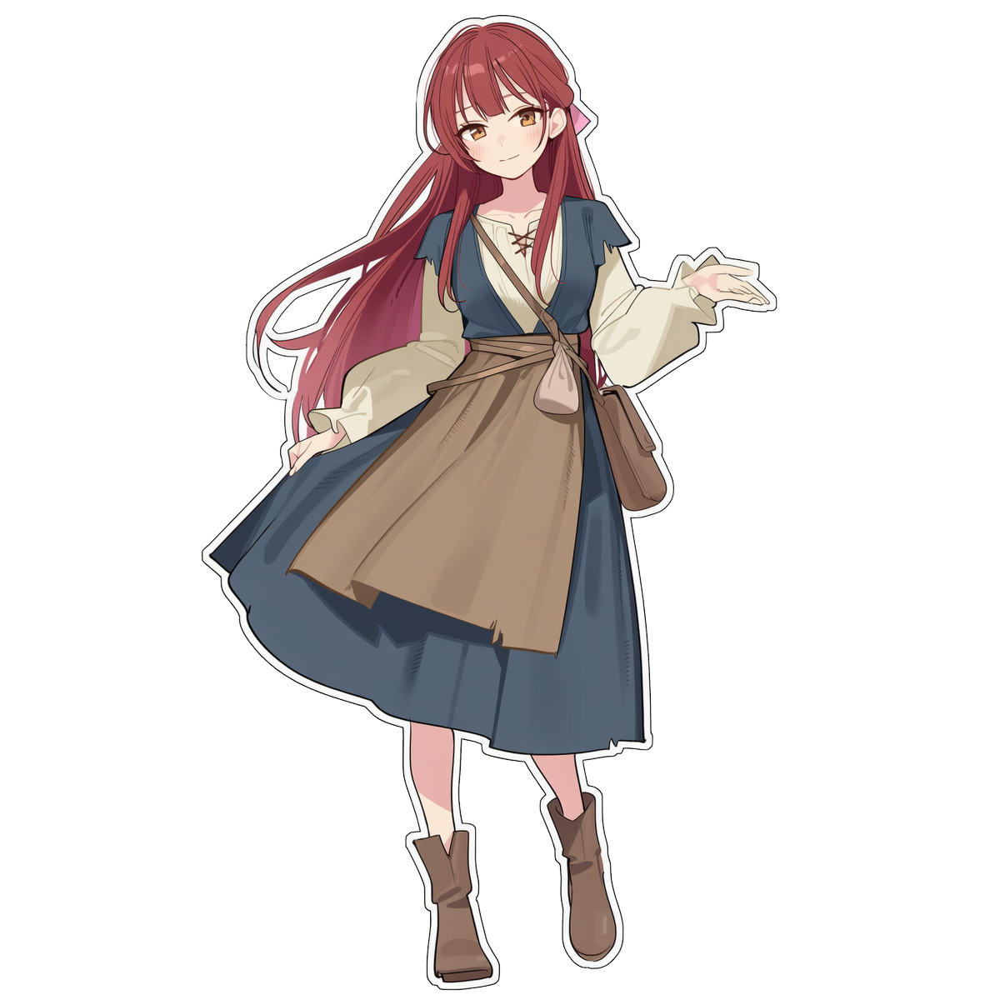

<section class="py-24 px-4 min-h-screen">
    <div class="max-w-6xl mx-auto">
        <!-- 헤더 -->
        <div class="text-center mb-20">
            <i class="fa-solid fa-eye text-4xl text-twilight-accent mb-4"></i>
            <h2 class="text-3xl md:text-4xl font-fantasy text-white font-bold mb-4">플레이 미리보기</h2>
            <p class="text-gray-400">우리의 이야기는 대화와 탐험, 그리고 디테일로 완성됩니다.</p>
            <div class="w-24 h-1 bg-gradient-to-r from-twilight-dark to-dnd-gold mx-auto mt-4"></div>
        </div>

        <!-- 메인 콘텐츠 영역 -->
        <div class="space-y-32">
            
            <!-- 1. 커뮤니케이션 씬 (Communication) -->
            <div class="relative group">
                <div class="grid lg:grid-cols-2 gap-12 items-center">
                    <!-- 이미지 영역 -->
                    <div class="relative rounded-lg overflow-hidden border border-gray-700 shadow-[0_0_30px_rgba(139,92,246,0.15)] group-hover:shadow-[0_0_30px_rgba(139,92,246,0.4)] transition-all duration-500 order-2 lg:order-1">
                        <div class="absolute inset-0 bg-gradient-to-t from-dnd-dark/80 via-transparent to-transparent z-10"></div>
                        
                        <div class="absolute bottom-4 left-4 z-20 flex items-center text-white">
                            <i class="fa-brands fa-discord text-2xl mr-3 text-[#5865F2]"></i>
                            <div>
                                <p class="font-bold text-sm">Discord Voice & Text</p>
                                <p class="text-xs text-gray-400">실시간 연기와 감정 교류</p>
                            </div>
                        </div>
                    </div>

                    <!-- 텍스트 설명 영역 -->
                    <div class="space-y-6 order-1 lg:order-2 text-right lg:text-left">
                        <div class="inline-block px-3 py-1 text-xs font-bold tracking-wider text-twilight-accent border border-twilight-accent rounded-full mb-2">ROLEPLAY</div>
                        <h3 class="text-3xl font-fantasy text-white font-bold">깊이 있는 대화와<br>감정의 울림</h3>
                        <p class="text-gray-400 leading-relaxed">
                            우리의 여정에서 가장 중요한 것은 캐릭터들의 이야기입니다. 
                            단순한 주사위 굴림을 넘어, 서로의 눈을 맞추고 목소리를 들으며 
                            <span class="text-white font-bold">"그 순간 캐릭터가 느꼈을 감정"</span>을 공유합니다.
                        </p>
                        <ul class="space-y-3 text-sm text-gray-500 inline-block text-left">
                            <li class="flex items-center"><span class="w-2 h-2 bg-twilight-accent rounded-full mr-3"></span>몰입감을 높이는 배경음악(BGM)</li>
                            <li class="flex items-center"><span class="w-2 h-2 bg-twilight-accent rounded-full mr-3"></span>성우 같은 연기는 필요하지 않습니다. 진심만 있다면요.</li>
                            <li class="flex items-center"><span class="w-2 h-2 bg-twilight-accent rounded-full mr-3"></span>중요한 순간은 텍스트 RP로 여운을 남깁니다.</li>
                        </ul>
                    </div>
                </div>
            </div>

            <!-- 2. 탐사 씬 (Exploration) -->
            <div class="relative group">
                <div class="grid lg:grid-cols-2 gap-12 items-center">
                    <!-- 텍스트 설명 영역 -->
                    <div class="space-y-6">
                        <div class="inline-block px-3 py-1 text-xs font-bold tracking-wider text-dnd-gold border border-dnd-gold rounded-full mb-2">EXPLORATION</div>
                        <h3 class="text-3xl font-fantasy text-white font-bold">미지의 세계를 향한<br>발걸음</h3>
                        <p class="text-gray-400 leading-relaxed">
                            VTT(Virtual Tabletop)를 통해 황혼이 깃든 숲과 잊혀진 왕국의 폐허를 시각적으로 탐험합니다.
                            어둠 속에 숨겨진 단서를 찾고, 전략적인 위치를 선정하여 
                            <span class="text-white font-bold">다가오는 위협</span>에 맞서세요.
                        </p>
                        <ul class="space-y-3 text-sm text-gray-500">
                            <li class="flex items-center"><i class="fa-solid fa-map text-dnd-gold mr-3"></i>고해상도 전술 맵과 다이내믹 라이팅</li>
                            <li class="flex items-center"><i class="fa-solid fa-chess-pawn text-dnd-gold mr-3"></i>직관적인 캐릭터 토큰과 UI</li>
                            <li class="flex items-center"><i class="fa-solid fa-magnifying-glass text-dnd-gold mr-3"></i>숨겨진 함정과 보물을 찾아내는 긴장감</li>
                        </ul>
                    </div>

                    <!-- 이미지 영역 -->
                    <div class="relative rounded-lg overflow-hidden border border-gray-700 shadow-[0_0_30px_rgba(212,175,55,0.15)] group-hover:shadow-[0_0_30px_rgba(212,175,55,0.4)] transition-all duration-500">
                        <div class="absolute inset-0 bg-gradient-to-t from-dnd-dark/80 via-transparent to-transparent z-10"></div>
                        
                        <div class="absolute bottom-4 right-4 z-20 flex items-center text-white text-right">
                            <div>
                                <p class="font-bold text-sm">VTT Map Exploration</p>
                                <p class="text-xs text-gray-400">전술적 전투와 현장감</p>
                            </div>
                            <i class="fa-solid fa-dice-d20 text-2xl ml-3 text-dnd-gold"></i>
                        </div>
                    </div>
                </div>
            </div>

            <!-- 3. 토큰 타입 소개 (Tokens) -->
            <div class="relative">
                <div class="text-center mb-12">
                    <div class="inline-block px-3 py-1 text-xs font-bold tracking-wider text-white border border-white rounded-full mb-4">IMMERSION</div>
                    <h3 class="text-3xl font-fantasy text-white font-bold">상황에 맞는 토큰 사용</h3>
                    <p class="text-gray-400 mt-4 max-w-2xl mx-auto leading-relaxed">
                        상황에 따라 두 가지 스타일의 토큰을 교체하며 사용합니다.<br>
                        대화할 때는 인물의 매력을, 전투할 때는 전술적 명확성을 추구합니다.
                    </p>
                </div>

                <div class="grid md:grid-cols-2 gap-8 max-w-4xl mx-auto">
                    <!-- 전신 일러스트 카드 -->
                    <div class="bg-dnd-grey/30 rounded-xl p-8 border border-gray-700 hover:border-twilight-accent transition-all duration-300 text-center group">
                        <div class="relative w-full aspect-[3/4] rounded-lg overflow-hidden mb-6 mx-auto bg-black/40 shadow-inner">
                            <div class="absolute inset-0 bg-gradient-to-t from-black/80 to-transparent z-10 opacity-60 group-hover:opacity-40 transition-opacity"></div>
                            
                        </div>
                        <h4 class="text-xl font-bold text-twilight-accent mb-2 font-fantasy">Portrait & Roleplay</h4>
                        <p class="text-sm text-gray-400 leading-relaxed">
                            대화나 이벤트 장면에서는 캐릭터의 표정과 복장이 잘 드러나는 <span class="text-white">전신 일러스트</span>를 사용하여 드라마틱한 연출을 돕습니다.
                        </p>
                    </div>

                    <!-- 탑뷰 토큰 카드 -->
                    <div class="bg-dnd-grey/30 rounded-xl p-8 border border-gray-700 hover:border-dnd-gold transition-all duration-300 text-center group">
                         <div class="relative w-full aspect-[3/4] rounded-lg overflow-hidden mb-6 mx-auto bg-black/40 shadow-inner flex items-center justify-center p-4">
                            <div class="absolute inset-0 bg-[url('https://www.transparenttextures.com/patterns/cubes.png')] opacity-10"></div>
                            
                        </div>
                        <h4 class="text-xl font-bold text-dnd-gold mb-2 font-fantasy">Tactical Top-Down</h4>
                        <p class="text-sm text-gray-400 leading-relaxed">
                            전투 시에는 위에서 내려다본 형태의 <span class="text-white">탑뷰 토큰</span>을 사용하여, 캐릭터의 위치와 시야각, 사거리를 직관적으로 파악합니다.
                        </p>
                    </div>
                </div>
            </div>

        </div>

        <!-- 하단 CTA -->
        <div class="text-center mt-32">
            <h3 class="text-2xl font-fantasy text-white mb-6">준비되셨나요?</h3>
            <a href="#apply" class="inline-block px-10 py-4 rounded border border-white text-white hover:bg-white hover:text-black transition-all duration-300 font-bold tracking-widest uppercase">
                Join the Journey
            </a>
        </div>
    </div>
</section>
